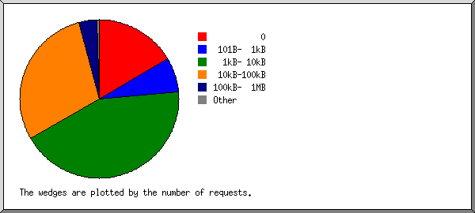

Web Server Statistics for wikicourses.net
Web Server Statistics for wikicourses.net
Program started on Mon, Mar 30 2020 at 4:34 PM.
Analyzed requests from Tue, Mar 17 2020 at 7:45 AM to Mon, Mar 30 2020 at 6:24 AM (12.94 days).
Web Server Statistics for wikicourses.netProgram started on Mon, Mar 30 2020 at 4:34 PM.
Analyzed requests from Tue, Mar 17 2020 at 7:45 AM to Mon, Mar 30 2020 at 6:24 AM (12.94 days).
(Go To: Top | General Summary | Monthly Report | Daily Summary | Hourly Summary | Domain Report | Organization Report | Redirected Referrer Report | Failed Referrer Report | Referring Site Report | Browser Report | Browser Summary | Operating System Report | Status Code Report | File Size Report | File Type Report | Directory Report | Request Report)
Figures in parentheses refer to the 7-day period ending Mar 30 2020 at 4:34 PM.
Successful requests: 1,072 (896)
Average successful requests per day: 82 (127)
Successful requests for pages: 126 (72)
Average successful requests for pages per day: 9 (10)
Failed requests: 113 (15)
Redirected requests: 2 (1)
Distinct files requested: 84 (91)
Distinct hosts served: 308 (335)
Data transferred: 22.70 megabytes (20.35 megabytes)
Average data transferred per day: 1.75 megabytes (2.91 megabytes)
(Go To: Top | General Summary | Monthly Report | Daily Summary | Hourly Summary | Domain Report | Organization Report | Redirected Referrer Report | Failed Referrer Report | Referring Site Report | Browser Report | Browser Summary | Operating System Report | Status Code Report | File Size Report | File Type Report | Directory Report | Request Report)
Each unit ( ) represents 4 requests for pages or part thereof.
) represents 4 requests for pages or part thereof.
| month | #reqs | #pages | |
|---|---|---|---|
| Mar 2020 | 1072 | 126 |  |
Busiest month: Mar 2020 (126 requests for pages).
(Go To: Top | General Summary | Monthly Report | Daily Summary | Hourly Summary | Domain Report | Organization Report | Redirected Referrer Report | Failed Referrer Report | Referring Site Report | Browser Report | Browser Summary | Operating System Report | Status Code Report | File Size Report | File Type Report | Directory Report | Request Report)
Each unit () represents 2 requests for pages or part thereof.
| day | #reqs | #pages | |
|---|---|---|---|
| Sun | 415 | 49 |   |
| Mon | 144 | 7 |  |
| Tue | 229 | 30 |  |
| Wed | 34 | 15 | |
| Thu | 31 | 10 | |
| Fri | 19 | 1 | |
| Sat | 200 | 14 | |
(Go To: Top | General Summary | Monthly Report | Daily Summary | Hourly Summary | Domain Report | Organization Report | Redirected Referrer Report | Failed Referrer Report | Referring Site Report | Browser Report | Browser Summary | Operating System Report | Status Code Report | File Size Report | File Type Report | Directory Report | Request Report)
Each unit () represents 1 request for a page.
| hour | #reqs | #pages | |
|---|---|---|---|
| 0 | 107 | 6 | |
| 1 | 30 | 0 | |
| 2 | 3 | 3 | |
| 3 | 4 | 4 | |
| 4 | 4 | 3 | |
| 5 | 0 | 0 | |
| 6 | 4 | 4 | |
| 7 | 3 | 3 | |
| 8 | 22 | 4 | |
| 9 | 0 | 0 | |
| 10 | 21 | 1 | |
| 11 | 185 | 22 | |
| 12 | 13 | 1 | |
| 13 | 5 | 3 | |
| 14 | 0 | 0 | |
| 15 | 124 | 12 | |
| 16 | 40 | 3 | |
| 17 | 28 | 5 | |
| 18 | 25 | 4 | |
| 19 | 172 | 27 | |
| 20 | 177 | 11 | |
| 21 | 39 | 2 | |
| 22 | 5 | 3 | |
| 23 | 61 | 5 | |
(Go To: Top | General Summary | Monthly Report | Daily Summary | Hourly Summary | Domain Report | Organization Report | Redirected Referrer Report | Failed Referrer Report | Referring Site Report | Browser Report | Browser Summary | Operating System Report | Status Code Report | File Size Report | File Type Report | Directory Report | Request Report)
Listing domains, sorted by the amount of traffic.
| #reqs | %bytes | domain |
|---|---|---|
| 1072 | 100% | [unresolved numerical addresses] |
(Go To: Top | General Summary | Monthly Report | Daily Summary | Hourly Summary | Domain Report | Organization Report | Redirected Referrer Report | Failed Referrer Report | Referring Site Report | Browser Report | Browser Summary | Operating System Report | Status Code Report | File Size Report | File Type Report | Directory Report | Request Report)
Listing the top 20 organizations by the number of requests, sorted by the number of requests.
| #reqs | %bytes | organization |
|---|---|---|
| 465 | 50.03% | 172.68 |
| 166 | 13.26% | 162.158 |
| 149 | 14.89% | 188.114 |
| 113 | 10.67% | 108 |
| 72 | 5.26% | 141.101 |
| 37 | 2.68% | 94 |
| 25 | 1.41% | 172.69 |
| 13 | 1.42% | 173.245 |
| 12 | 0.03% | 93 |
| 5 | 0.01% | 78 |
| 3 | 0.16% | 195.154 |
| 2 | 45 | |
| 2 | 54 | |
| 2 | 0.16% | 62.210 |
| 1 | 0.01% | 181.215 |
| 1 | 35 | |
| 1 | 138.197 | |
| 1 | 69 | |
| 1 | 142.93 | |
| 1 | 107 |
(Go To: Top | General Summary | Monthly Report | Daily Summary | Hourly Summary | Domain Report | Organization Report | Redirected Referrer Report | Failed Referrer Report | Referring Site Report | Browser Report | Browser Summary | Operating System Report | Status Code Report | File Size Report | File Type Report | Directory Report | Request Report)
Listing referring URLs, sorted by the number of redirected requests.
| #reqs | URL |
|---|---|
| 1 | https://wikicourses.net/ |
| 1 | https://wikicourses.net/MainCourse/Programming |
(Go To: Top | General Summary | Monthly Report | Daily Summary | Hourly Summary | Domain Report | Organization Report | Redirected Referrer Report | Failed Referrer Report | Referring Site Report | Browser Report | Browser Summary | Operating System Report | Status Code Report | File Size Report | File Type Report | Directory Report | Request Report)
Listing referring URLs, sorted by the number of failed requests.
(Go To: Top | General Summary | Monthly Report | Daily Summary | Hourly Summary | Domain Report | Organization Report | Redirected Referrer Report | Failed Referrer Report | Referring Site Report | Browser Report | Browser Summary | Operating System Report | Status Code Report | File Size Report | File Type Report | Directory Report | Request Report)
Listing referring sites, sorted by the number of requests.
| #reqs | site |
|---|---|
| 852 | https://wikicourses.net/ |
| 8 | http://m.facebook.com/ |
| 4 | https://l.facebook.com/ |
| 2 | https://l.messenger.com/ |
| 1 | https://www.facebook.com/ |
| 1 | https://wikicourses.net:2083/ |
(Go To: Top | General Summary | Monthly Report | Daily Summary | Hourly Summary | Domain Report | Organization Report | Redirected Referrer Report | Failed Referrer Report | Referring Site Report | Browser Report | Browser Summary | Operating System Report | Status Code Report | File Size Report | File Type Report | Directory Report | Request Report)
Listing browsers with at least 1 request for a page, sorted by the number of requests for pages.
| #reqs | #pages | browser |
|---|---|---|
| 529 | 47 | Mozilla/5.0 (Windows NT 10.0; Win64; x64) AppleWebKit/537.36 (KHTML, like Gecko) Chrome/80.0.3987.149 Safari/537.36 |
| 52 | 17 | facebookexternalhit/1.1 (+http://www.facebook.com/externalhit_uatext.php) |
| 158 | 11 | Mozilla/5.0 (iPhone; CPU iPhone OS 13_3 like Mac OS X) AppleWebKit/605.1.15 (KHTML, like Gecko) CriOS/80.0.3987.95 Mobile/15E148 Safari/604.1 |
| 6 | 6 | Mozilla/5.0 (Windows NT 10.0; Win64; x64) AppleWebKit/537.36 (KHTML, like Gecko) Chrome/74.0.3729.169 Safari/537.36 |
| 112 | 6 | Mozilla/5.0 (Linux; Android 7.0; SM-J701F Build/NRD90M; wv) AppleWebKit/537.36 (KHTML, like Gecko) Version/4.0 Chrome/80.0.3987.149 Mobile Safari/537.36 [FB_IAB/Orca-Android;FBAV/256.2.0.23.117;] |
| 5 | 5 | Mozilla/5.0 (X11; Ubuntu; Linux x86_64; rv:58.0) Gecko/20100101 Firefox/58.0 |
| 5 | 5 | Mozilla/5.0 (compatible; XoviOnpageCrawler; +http://www.xovi.de/) |
| 3 | 3 | Go-http-client/1.1 |
| 61 | 2 | Mozilla/5.0 (Linux; Android 9; JKM-LX1) AppleWebKit/537.36 (KHTML, like Gecko) Chrome/80.0.3987.149 Mobile Safari/537.36 |
| 22 | 2 | Mozilla/5.0 (Windows NT 10.0; Win64; x64) AppleWebKit/537.36 (KHTML, like Gecko) Chrome/80.0.3987.132 Safari/537.36 |
| 4 | 2 | Mozilla/5.0 (Windows NT 10.0; Win64; x64) AppleWebKit/537.36 (KHTML, like Gecko) Chrome/80.0.3987.132 Safari/537.36 OPR/67.0.3575.97 |
| 1 | 1 | Mozilla/5.0 (Windows NT 10.0; Win64; x64) AppleWebKit/537.36 (KHTML, like Gecko) Chrome/79.0.3945.130 Safari/537.36 |
| 1 | 1 | Mozilla/5.0 (iPad; CPU OS 10_3_3 like Mac OS X) AppleWebKit/603.3.8 (KHTML, like Gecko) Version/10.0 Mobile/14G60 Safari/602.1 |
| 12 | 1 | Mozilla/5.0 (iPhone; CPU iPhone OS 13_3_1 like Mac OS X) AppleWebKit/605.1.15 (KHTML, like Gecko) Mobile/15E148 LightSpeed [FBAN/MessengerLiteForiOS;FBAV/257.0.1.38.116;FBBV/204807655;FBDV/iPhone10,6;FBMD/iPhone;FBSN/iOS;FBSV/13.3.1;FBSS/3;FBCR/;FBID/phone;FBLC/en_LB;FBOP/0] |
| 43 | 1 | Mozilla/5.0 (iPhone; CPU iPhone OS 13_3_1 like Mac OS X) AppleWebKit/605.1.15 (KHTML, like Gecko) Version/13.0.5 Mobile/15E148 Safari/604.1 |
| 1 | 1 | Mozilla/5.0 (Windows NT 6.3; WOW64) AppleWebKit/537.36 (KHTML, like Gecko) Chrome/41.0.2225.0 Safari/537.36 |
| 2 | 1 | PleskBot |
| 1 | 1 | Mozilla/5.0 (iPhone; CPU iPhone OS 13_1 like Mac OS X) AppleWebKit/605.1.15 (KHTML, like Gecko) Version/13.0.1 Mobile/15E148 Safari/604.1 |
| 28 | 1 | Mozilla/5.0 (Windows NT 10.0; Win64; x64; rv:74.0) Gecko/20100101 Firefox/74.0 |
| 1 | 1 | Mozilla/5.0 (X11; Linux x86_64) AppleWebKit/537.36 (KHTML, like Gecko) Chrome/58.0.3029.110 Safari/537.36 |
| 1 | 1 | Mozilla/5.0 (Windows NT 10.0; Win64; x64; rv:71.0) Gecko/20100101 Firefox/71.0 |
| 8 | 1 | Mozilla/5.0 (Linux; Android 7.0; SM-J701F) AppleWebKit/537.36 (KHTML, like Gecko) Chrome/80.0.3987.149 Mobile Safari/537.36 |
| 1 | 1 | Mozilla/5.0 (Macintosh; Intel Mac OS X 10_12_4) AppleWebKit/537.36 (KHTML, like Gecko) Chrome/57.0.2987.133 Safari/537.36 |
| 1 | 1 | Mozilla/5.0 (Windows NT 10.0; WOW64) AppleWebKit/537.36 (KHTML, like Gecko) Chrome/53.0.2785.143 Safari/537.36 |
| 1 | 1 | Mozilla/5.0 (X11; Linux x86_64) AppleWebKit/537.36 (KHTML, like Gecko) Chrome/41.0.2227.0 Safari/537.36 |
| 7 | 0 | [not listed: 3 browsers] |
(Go To: Top | General Summary | Monthly Report | Daily Summary | Hourly Summary | Domain Report | Organization Report | Redirected Referrer Report | Failed Referrer Report | Referring Site Report | Browser Report | Browser Summary | Operating System Report | Status Code Report | File Size Report | File Type Report | Directory Report | Request Report)
Listing browsers with at least 1 request for a page, sorted by the number of requests for pages.
| # | #reqs | #pages | browser |
|---|---|---|---|
| 1 | 953 | 86 | Safari |
| 750 | 72 | Safari/537 | |
| 202 | 13 | Safari/604 | |
| 1 | 1 | Safari/602 | |
| 2 | 52 | 17 | facebookexternalhit |
| 52 | 17 | facebookexternalhit/1 | |
| 3 | 34 | 7 | Firefox |
| 5 | 5 | Firefox/58 | |
| 1 | 1 | Firefox/71 | |
| 28 | 1 | Firefox/74 | |
| 4 | 6 | 5 | Netscape (compatible) |
| 5 | 3 | 3 | Go-http-client |
| 3 | 3 | Go-http-client/1 | |
| 6 | 12 | 1 | Mozilla |
| 7 | 2 | 1 | PleskBot |
| 4 | 0 | [not listed: 1 browser] |
(Go To: Top | General Summary | Monthly Report | Daily Summary | Hourly Summary | Domain Report | Organization Report | Redirected Referrer Report | Failed Referrer Report | Referring Site Report | Browser Report | Browser Summary | Operating System Report | Status Code Report | File Size Report | File Type Report | Directory Report | Request Report)
Listing operating systems, sorted by the number of requests for pages.
| # | #reqs | #pages | OS |
|---|---|---|---|
| 1 | 593 | 62 | Windows |
| 592 | 61 | Windows NT | |
| 1 | 1 | Unknown Windows | |
| 2 | 62 | 21 | OS unknown |
| 3 | 190 | 16 | Unix |
| 190 | 16 | Linux | |
| 4 | 216 | 16 | Macintosh |
| 5 | 5 | 5 | Known robots |
(Go To: Top | General Summary | Monthly Report | Daily Summary | Hourly Summary | Domain Report | Organization Report | Redirected Referrer Report | Failed Referrer Report | Referring Site Report | Browser Report | Browser Summary | Operating System Report | Status Code Report | File Size Report | File Type Report | Directory Report | Request Report)
Listing status codes, sorted numerically.
| #reqs | status code |
|---|---|
| 887 | 200 OK |
| 26 | 206 Partial content |
| 1 | 301 Document moved permanently |
| 1 | 302 Document found elsewhere |
| 159 | 304 Not modified since last retrieval |
| 54 | 401 Authentication required |
| 32 | 404 Document not found |
| 26 | 500 Internal server error |
| 1 | 503 Service temporarily unavailable |
(Go To: Top | General Summary | Monthly Report | Daily Summary | Hourly Summary | Domain Report | Organization Report | Redirected Referrer Report | Failed Referrer Report | Referring Site Report | Browser Report | Browser Summary | Operating System Report | Status Code Report | File Size Report | File Type Report | Directory Report | Request Report)

| size | #reqs | %bytes |
|---|---|---|
| 0 | 178 | |
| 1B- 10B | 0 | |
| 11B- 100B | 2 | |
| 101B- 1kB | 77 | 0.23% |
| 1kB- 10kB | 460 | 7.78% |
| 10kB-100kB | 315 | 54.58% |
| 100kB- 1MB | 38 | 23.08% |
| 1MB- 10MB | 2 | 14.34% |
(Go To: Top | General Summary | Monthly Report | Daily Summary | Hourly Summary | Domain Report | Organization Report | Redirected Referrer Report | Failed Referrer Report | Referring Site Report | Browser Report | Browser Summary | Operating System Report | Status Code Report | File Size Report | File Type Report | Directory Report | Request Report)
Listing extensions with at least 0.1% of the traffic, sorted by the amount of traffic.
| #reqs | %bytes | extension |
|---|---|---|
| 261 | 26.91% | .png [PNG graphics] |
| 92 | 21.73% | .ttf |
| 74 | 20.17% | .jpg [JPEG graphics] |
| 34 | 10.70% | .woff2 |
| 15 | 5.99% | .woff |
| 145 | 5.73% | .js [JavaScript code] |
| 171 | 4.84% | .css [Cascading Style Sheets] |
| 145 | 2.28% | [no extension] |
| 126 | 1.65% | [directories] |
| 9 | [not listed: 2 extensions] |
(Go To: Top | General Summary | Monthly Report | Daily Summary | Hourly Summary | Domain Report | Organization Report | Redirected Referrer Report | Failed Referrer Report | Referring Site Report | Browser Report | Browser Summary | Operating System Report | Status Code Report | File Size Report | File Type Report | Directory Report | Request Report)

Listing directories with at least 0.01% of the traffic, sorted by the amount of traffic.
| #reqs | %bytes | directory |
|---|---|---|
| 327 | 46.88% | /images/ |
| 126 | 32.43% | /fonts/ |
| 186 | 10.83% | /css/ |
| 145 | 5.73% | /js/ |
| 119 | 1.94% | /Courses/ |
| 135 | 1.65% | [root directory] |
| 25 | 0.28% | /MainCourse/ |
| 8 | 0.19% | /uploads/ |
| 1 | 0.07% | /view_lesson/ |
(Go To: Top | General Summary | Monthly Report | Daily Summary | Hourly Summary | Domain Report | Organization Report | Redirected Referrer Report | Failed Referrer Report | Referring Site Report | Browser Report | Browser Summary | Operating System Report | Status Code Report | File Size Report | File Type Report | Directory Report | Request Report)
Listing files with at least 20 requests, sorted by the number of requests.
| #reqs | %bytes | last time | file |
|---|---|---|---|
| 126 | 1.65% | Mar/30/20 6:24 AM | / |
| 46 | 2.34% | Mar/30/20 1:52 AM | /images/logo.png |
| 41 | 0.29% | Mar/30/20 1:52 AM | /images/logo-mobile.png |
| 38 | 1.15% | Mar/30/20 1:52 AM | /css/style.css |
| 36 | 0.10% | Mar/30/20 1:52 AM | /js/rating.js |
| 35 | 0.23% | Mar/30/20 1:52 AM | /js/plugins.js |
| 35 | 1.20% | Mar/30/20 1:52 AM | /js/bootstrap.min.js |
| 35 | 3.67% | Mar/30/20 1:52 AM | /js/jquery.min.js |
| 34 | 2.79% | Mar/30/20 1:52 AM | /images/PDFiles.png |
| 34 | 5.43% | Mar/30/20 1:52 AM | /fonts/NotoKufiArabic-Bold.ttf |
| 34 | 10.70% | Mar/30/20 1:52 AM | /fonts/fontawesome-webfont.woff2 |
| 34 | 5.22% | Mar/30/20 1:52 AM | /fonts/NotoKufiArabic-Regular.ttf |
| 33 | 11.37% | Mar/30/20 1:52 AM | /images/mutaz_net.png |
| 33 | 9.37% | Mar/30/20 1:52 AM | /images/wikicourses.png |
| 33 | 0.63% | Mar/30/20 1:52 AM | /css/font-awesome.min.css |
| 32 | 2.30% | Mar/30/20 1:52 AM | /css/bootstrap.min.css |
| 32 | 0.33% | Mar/30/20 1:52 AM | /css/bootstrap.rtl.css |
| 32 | 0.35% | Mar/30/20 1:52 AM | /css/devicon.min.css |
| 31 | 11.46% | Mar/30/20 12:11 AM | /images/intro-bg.jpg |
| 25 | 0.38% | Mar/30/20 12:26 AM | /images/favicon.png |
| 25 | 0.31% | Mar/30/20 1:52 AM | /Courses/Programming/php/php-oop-cliprz/1 |
| 24 | 11.08% | Mar/30/20 1:52 AM | /fonts/NotoNaskhArabic-Regular.ttf |
| 22 | 0.25% | Mar/30/20 12:31 AM | /MainCourse/Programming |
| 20 | 0.26% | Mar/29/20 5:32 PM | /Courses/Programming/PHP |
| 202 | 17.15% | Mar/30/20 1:52 AM | [not listed: 45 files] |